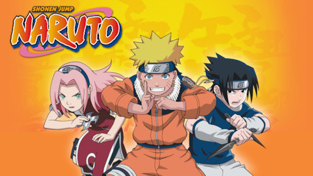
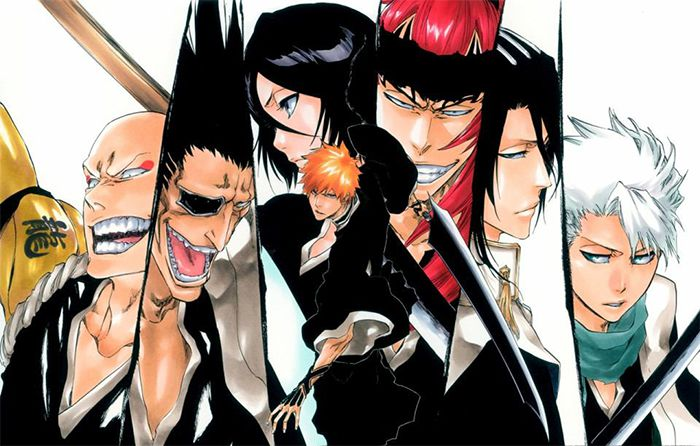

Anime collections

Naruto is one of the most famous animations in Japan, which is a Japanese manga series written and illustrated by Masashi Kishimoto. It tells a young ninja whose name is Naruto. He dreams and searches for recognition from his peers and also dreams of becoming the Hokage, the leader of his village. I started to watch this animation since I was only 10 years old, so basicly you can tell that I am deeply attached to this cartoon.

One piece is also one of the best animations in Japan. It is written and illustrated by Eiichiro Oda. This is a story which narrates a little pirte whose name is Luffy with the special ability of rubber. And he wants to gether 10 best sailors to travel and realize their dreams through many difficuit and long advantures.

Megalo box is a new sport animation which published in 2018 and produced by the studio TMS Entertainment, which also produced the second Ashita no Joe anime in 1980. The animation takes place in a futuristic setting where licensed citizens live in a wealthy city while, on the outskirts of this city, there is a slum town where unlicensed citizens live in Japan. The main character Joe is one of the unlicense citizen, and he relies on doing fake boxing to earn money. One day he meets the champion of Megalo box which is the highest level of boxing tournament in this world. Then Joe set his teeth on winning the world champion, this how the story starts.

Eureka Seven, known in Japan as Psalms of Planets Eureka seven which is made as a robot war kind animation, is a 2005 Japanese anime series created by Bones. The series was directed by Tomoki Kyoda, Eureka Seven is my favorite animation recently because it doesn't like other cartoon such as One piece and Naruto that only have fighting and comedy scenes. Eureka Seven involve romantic, fighting, comedy and friendship scenes. And this protagonist and the author have the best overlooks on the world, life and values of all the other animations I have ever seen.

Bleach is a Japanese anime television series based on Tite Kubo's manga of the same name. The series ran for a total of 366 episodes. Bleach was produced by Studio Pierrot and directed by Noriyuki Abe.